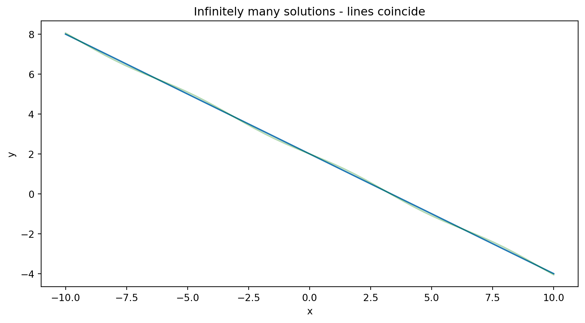
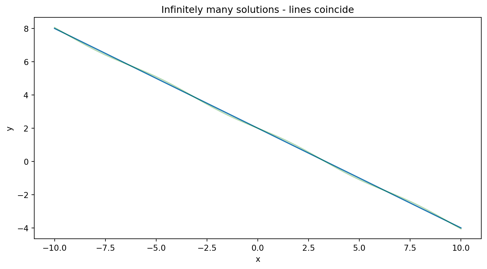
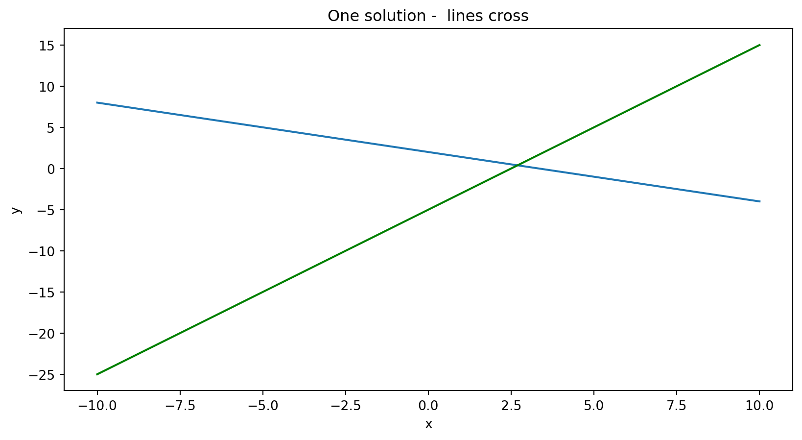
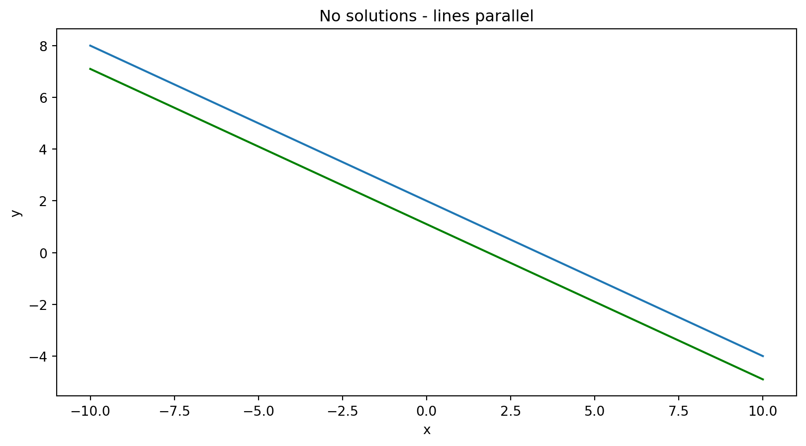

A linear equation in variables \(x_1,\ldots, x_n\) with constants \(a_1,\ldots, a_n\) and \(b\) is an equation where the variables all appear to the first power (only).
\[ a_1 x_1 + a_2 x_2 + \cdots a_n x_n = b \]
If \(n=2\), the solution set to an equation
\[ a_1 x_1 + a_2 x_2 = b \]
is a line (hence the name linear). In higher dimensions, the solution set is a “hyperplane”.
A system of linear equations is a collection
\[ \begin{aligned} a_{11} x_1 + a_{12} x_2 + \cdots + a_{1n} x_n &= b_1 \\ a_{21} x_1 + a_{22} x_2 + \cdots + a_{2n} x_{n} &= b_2 \\ \vdots\phantom{+ a_{2n} x_{n} =} & \phantom{= b}\vdots \\ a_{k1} x_1 + a_{k2} x_2 + \cdots + a_{kn} x_{n} &= b_{k} \end{aligned} \]
Note the indexing:
Given two equations in two unknowns there are three possibilities:
\[ \begin{aligned} 3x+5y&=10 \\ 6x+10y&=20 \end{aligned} \]

\[ \begin{aligned} 3x+5y &= 10 \\ 2x -y &= 5 \end{aligned} \]

\[ \begin{aligned} 3x+5y&=10\\ 6x+10y&= 11 \\ \end{aligned} \]

What can we say about systems with more equations and more unknowns?
Spoiler alert: the same three possibilities hold:
We can simplify the writing by replacing this information: \[ \begin{aligned} a_{11} x_1 + a_{12} x_2 + \cdots + a_{1n} x_n &= b_1 \\ a_{21} x_1 + a_{22} x_2 + \cdots + a_{2n} x_{n} &= b_2 \\ \vdots\phantom{+ a_{2n} x_{n} =} & \phantom{= b}\vdots \\ a_{k1} x_1 + a_{k2} x_2 + \cdots + a_{kn} x_{n} &= b_{k} \end{aligned} \] with a “matrix” consisting of just the coefficients. \[ \begin{pmatrix} a_{11} & a_{12} & \cdots & a_{1n} & b_{1} \\ \vdots & \vdots & \vdots & \vdots & \vdots \\ a_{k1} & a_{k2} & \cdots & a_{kn} & b_{k} \\ \end{pmatrix} \]
This is called the augmented matrix of the system of equations.
If you drop the final “b” column then it’s called the coefficient matrix.
Given a system of equations, you can:
Rearrange the equations into any order.
Replace any equation in the system by a multiple by a non-zero constant.
Replace any equation \(e\) by \(e+f\) where \(f\) is another equation in the system.
All of these operations are reversible and so the solutions of the transformed system are the same as the original.
These are called elementary row operations.
The algorithm for solving a system involves using these row operations to reduce the system to one where the solutions are easy to see.
[[ 0. 1. 4. -4.]
[ 1. 3. 3. -2.]
[ 3. 7. 5. 6.]]
Swap row 3 and row 1
[[ 3. 7. 5. 6.]
[ 1. 3. 3. -2.]
[ 0. 1. 4. -4.]]
Row[2] -> -3*Row[2]+Row[1]
[[ 3. 7. 5. 6.]
[ 0. -2. -4. 12.]
[ 0. 1. 4. -4.]]
Row[3]-> 2*Row[3]+Row[2]
[[ 3. 7. 5. 6.]
[ 0. -2. -4. 12.]
[ 0. 0. 4. 4.]]
Divide rows by leading coeffs
[[ 1. 2.33333333 1.66666667 2. ]
[-0. 1. 2. -6. ]
[ 0. 0. 1. 1. ]]The reduced matrix tells us that \(x_{3}=1\).
Then from the second row we get: \(x_{2}+2x_{3}=-6\), so \(x_{2}+2=-6\) and \(x_2=-8\).
Then from the first row we get \(x_{1}+(7/3)x_{2}+(5/3)x_{3}=2\), so \(x_{1}-56/3+5/3=2\) and \(x_{1}=19.\)
We should check.
\[x_2+4x_3 = -8+4 = -4\] \[x_1+3x_2+3x_3 = 19-24+3 =-2\] \[3x_1+7x_2+5x_3 =57-56+5 = 6\]
[[ 0 1 -4 8]
[ 2 -3 2 1]
[ 4 -8 12 1]]
Row[2]->-2*Row[2]+Row[3]
[[ 0 1 -4 8]
[ 0 -2 8 -1]
[ 4 -8 12 1]]
Swap Row 3 and Row 1
[[ 4 -8 12 1]
[ 0 -2 8 -1]
[ 0 1 -4 8]]
Row[3]->2*Row[3]+Row[2]
[[ 4 -8 12 1]
[ 0 -2 8 -1]
[ 0 0 0 15]]
This system has no solutions, it is inconsistent - the last row would mean 0=15A matrix is in echelon form (row echelon form) if:
\[\begin{pmatrix} \square & * & \cdots &* & * & \cdots & * \\ 0 & \square & * \cdots &* & * & \cdots & *\\ 0 & 0 & 0 & \square &* & \cdots & * \\ 0 & 0 & 0 & 0 & \cdots & \cdots & 0 \\ \end{pmatrix} \] Here \(\square\) is non-zero, and \(*\) is anything.
\[\begin{matrix} x_{1} & &+ 5 x_{3} &+ x_{4} &=11 \\ &2x_{2}& &-x_{4} &= 5 \\ &&x_{3}&+x_{4} &=1 \\ \end{matrix} \]
This yields:
\[\begin{aligned} x_{3}&=1-x_{4} \\ x_{2} &= 5/2+x_{4}/2\\ x_{1} &= 11-5(1-x_{4})+x_{4}=6+6x_{4} \\ \end{aligned} \]
There are infinitely many solutions; \(x_{4}\) can be anything and the others follow.
A matrix is in reduced echelon form if it is in echelon form and:
Theorem: Given a \(k\times n\) matrix, there is a sequence of row operations that will change it into a matrix in reduced row echelon form. A matrix has only one reduced row echelon form.
Remember our echelon matrix from before
[[ 1. 2.33333333 1.66666667 2. ]
[-0. 1. 2. -6. ]
[ 0. 0. 1. 1. ]]
We can reduce this
X[1]->X[1]-7/3X[2]
[[ 1. 0. -3. 16.]
[-0. 1. 2. -6.]
[ 0. 0. 1. 1.]]
X[1]->X[1]+3X[3]
[[ 1. 0. 0. 19.]
[-0. 1. 2. -6.]
[ 0. 0. 1. 1.]]
X[2]->X[2]-2*X[3]
[[ 1. 0. 0. 19.]
[-0. 1. 0. -8.]
[ 0. 0. 1. 1.]]Notice that this “solves” the system explicitly (look at the last column)
Forward Pass:
Find the leftmost column with a nonzero entry. Swap rows to make the top entry in that column nonzero. (This nonzero entry in the top leftmost position is called a pivot).
Use row operations to zero out all of the entries below the pivot.
Look at the submatrix below the pivot. Carry out steps 1 and 2 on this submatrix. Continue moving down and to the right, applying steps 1 and 2 to smaller and smaller submatrices until you reach the last row.
Now start at the last row which a nonzero entry. Scale that row so its left most nonzero entry is 1.
Use row operations to make all the entries in the column above this 1 equal to zero.
Now move up and to the left, scaling the leading entry to 1 and eliminating non-zero entries above, until you reach the upper left corner.
Let \(M\) be the augmented matrix of a linear system. Put \(M\) in reduced row echelon form. Then:
If there is a row with a non-zero final entry but zeros before that, the system is inconsistent. In other words, if the last column is a pivot column, the system is inconsistent. Otherwise:
Columns with a nonzero pivot correspond to basic variables.
Columns without a pivot correspond to free variables.
The free variables can take any value, and the basic variables can be computed for any choice of the free variables.
The system has no solutions if the last column of the augmented matrix is a pivot column.
The system has infinitely many solutions if it is consistent and has at least one free variable.
The system has a unique solution if every column (except the last one) is a pivot column, and therefore it has no free variables.
Matrix is
⎡1 2 3 4⎤
⎢ ⎥
⎢4 5 6 7⎥
⎢ ⎥
⎣6 7 8 9⎦
Reduced matrix is
⎡1 0 -1 -2⎤
⎢ ⎥
⎢0 1 2 3 ⎥
⎢ ⎥
⎣0 0 0 0 ⎦
Pivot columns are (1, 2)
Column 3 is a free variable
\[\begin{aligned} x_{2} &= 3-2x_{3} \\ x_{1} &= -2+x_{3} \\ \end{aligned} \]
Matrix is
⎡1 3 5 7⎤
⎢ ⎥
⎢3 5 7 9⎥
⎢ ⎥
⎣5 7 9 1⎦
Reduced matrix is
⎡1 0 -1 0⎤
⎢ ⎥
⎢0 1 2 0⎥
⎢ ⎥
⎣0 0 0 1⎦
Pivot columns are (1, 2)
Column 3 is a free variable